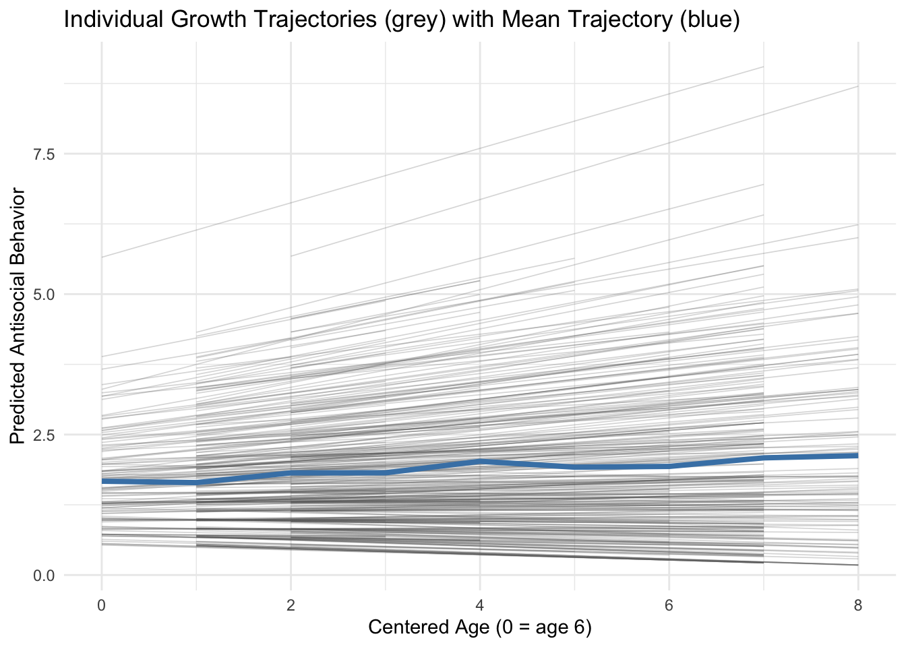
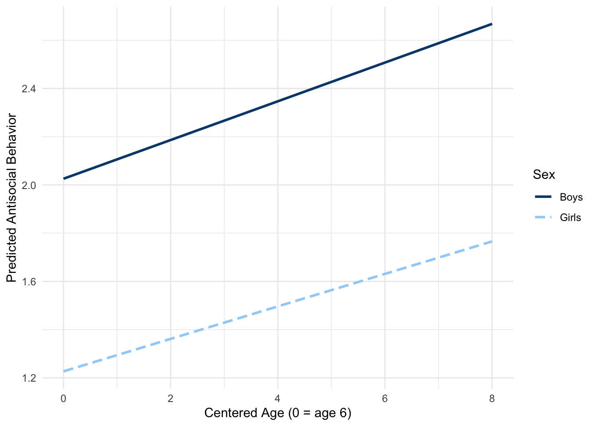
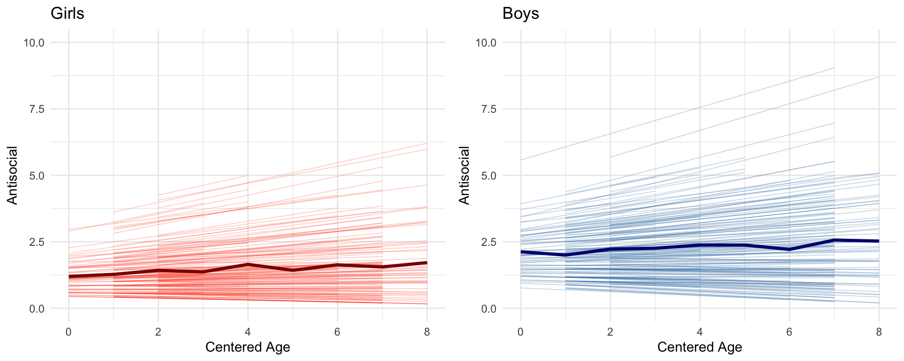

This document provides two fully-worked applied examples drawn from course datasets:
Part I — MLM Growth Model with Moderation (antisocial.csv): A multilevel linear growth model of children’s antisocial behavior across ages 8–14, testing whether sex and home cognitive environment moderate the trajectory of change.
Part II — Longitudinal Measurement Invariance (selfconcept.dat): A step-by-step configural → weak → strong → partial scalar invariance sequence for a four-indicator self-concept scale measured at ages 8, 10, and 12.
2 Part I: MLM — Antisocial Behavior Growth Model with Moderation
2.1 Background
Dataset: antisocial.csv (N = 405 children from the NLSY) Outcome: Antisocial behavior (composite score, higher = more antisocial) Time structure: Four assessments recorded at ages that vary by individual (ages 6–14), converted to a centered age variable Level-2 predictors: male (0 = girl, 1 = boy); homecog (home cognitive support, standardized)
Research Questions:
Q1: Is there a significant mean growth trend in antisocial behavior across childhood?
Q2: Does the trajectory differ by sex (level and rate of change)?
Q3: Does the home cognitive environment predict both initial level and rate of change?
# Observed mean trajectoryggplot(means, aes(age, anti)) +geom_point(size =3) +geom_line() +geom_smooth(method ="lm", se =FALSE, color ="steelblue",linetype ="dashed") +labs(x ="Centered Age (0 = age 6)",y ="Mean Antisocial Behavior",title ="Observed Mean Trajectory of Antisocial Behavior" ) +theme_minimal()
Before fitting growth trajectories, we first determine how much between-person variance exists and whether MLM is warranted. The null model contains no predictors—it simply partitions total variance into between-person (\(\tau_{00}\)) and within-person (\(\sigma^2\)) components.
m0 <-lmer(anti ~1+ (1| id), data = antisocial_long)summary(m0)
Linear mixed model fit by REML. t-tests use Satterthwaite's method [
lmerModLmerTest]
Formula: anti ~ 1 + (1 | id)
Data: antisocial_long
REML criterion at convergence: 5342.3
Scaled residuals:
Min 1Q Median 3Q Max
-3.2400 -0.5587 -0.2056 0.4745 4.5142
Random effects:
Groups Name Variance Std.Dev.
id (Intercept) 1.797 1.341
Residual 1.957 1.399
Number of obs: 1362, groups: id, 405
Fixed effects:
Estimate Std. Error df t value Pr(>|t|)
(Intercept) 1.89751 0.07736 399.11460 24.53 <2e-16 ***
---
Signif. codes: 0 '***' 0.001 '**' 0.01 '*' 0.05 '.' 0.1 ' ' 1
Interpretation: The ICC indicates what proportion of total variance in antisocial behavior is attributable to stable between-person differences. An ICC > 0.10 provides strong justification for MLM; ordinary regression would produce biased standard errors by ignoring this clustering.
2.4 Step 2 — Unconditional Growth Model
We add a fixed and random effect of age to model individual linear growth trajectories. Each child now has their own intercept (level at age 6) and slope (rate of annual change).
m1 <-lmer(anti ~ age + (1+ age | id), data = antisocial_long)summary(m1)
Linear mixed model fit by REML. t-tests use Satterthwaite's method [
lmerModLmerTest]
Formula: anti ~ age + (1 + age | id)
Data: antisocial_long
REML criterion at convergence: 5290.5
Scaled residuals:
Min 1Q Median 3Q Max
-3.2114 -0.5355 -0.1772 0.4545 3.8867
Random effects:
Groups Name Variance Std.Dev. Corr
id (Intercept) 1.01338 1.0067
age 0.02295 0.1515 0.48
Residual 1.75176 1.3235
Number of obs: 1362, groups: id, 405
Fixed effects:
Estimate Std. Error df t value Pr(>|t|)
(Intercept) 1.62891 0.08573 377.03846 18.999 < 2e-16 ***
age 0.07425 0.01774 300.94089 4.185 3.75e-05 ***
---
Signif. codes: 0 '***' 0.001 '**' 0.01 '*' 0.05 '.' 0.1 ' ' 1
Correlation of Fixed Effects:
(Intr)
age -0.496
Code
confint(m1, method ="Wald")
2.5 % 97.5 %
.sig01 NA NA
.sig02 NA NA
.sig03 NA NA
.sigma NA NA
(Intercept) 1.460875 1.7969490
age 0.039475 0.1090299
Code
ggplot(antisocial_long, aes(age, predict(m1))) +geom_line(aes(group = id), alpha =0.25, linewidth =0.3, color ="grey40") +stat_summary(fun = mean, geom ="line",linewidth =1.4, color ="steelblue") +labs(x ="Centered Age (0 = age 6)",y ="Predicted Antisocial Behavior",title ="Individual Growth Trajectories (grey) with Mean Trajectory (blue)" ) +theme_minimal()

Interpretation:
Fixed intercept (\(\gamma_{00}\)): Average antisocial behavior score at age 6 (centered age = 0).
Fixed slope (\(\gamma_{10}\)): Average annual rate of change across childhood. A positive value indicates behavior increases over time on average.
Random intercept variance (\(\tau_{00}\)): Substantial between-person differences in starting level.
Random slope variance (\(\tau_{11}\)): Children differ meaningfully in their rate of change — some increase faster, others plateau or decline.
Intercept–slope covariance (\(\tau_{01}\)): If negative, children who start higher tend to grow more slowly (ceiling effect); if positive, higher starters accelerate further.
2.5 Step 3 — Moderation by Sex
Research question: Do boys and girls differ in their baseline level of antisocial behavior and in their rate of change over time?
We add male as a level-2 predictor of both the random intercept and random slope, yielding a cross-level interaction: age × male.
m2 <-lmer( anti ~ age * male + (1+ age | id),data = antisocial_long,control =lmerControl(optimizer ="bobyqa", optCtrl =list(maxfun =2e5)))summary(m2)
Linear mixed model fit by REML. t-tests use Satterthwaite's method [
lmerModLmerTest]
Formula: anti ~ age * male + (1 + age | id)
Data: antisocial_long
Control: lmerControl(optimizer = "bobyqa", optCtrl = list(maxfun = 2e+05))
REML criterion at convergence: 5265
Scaled residuals:
Min 1Q Median 3Q Max
-3.1188 -0.5469 -0.1599 0.4535 3.9363
Random effects:
Groups Name Variance Std.Dev. Corr
id (Intercept) 0.85375 0.9240
age 0.02294 0.1515 0.51
Residual 1.75408 1.3244
Number of obs: 1362, groups: id, 405
Fixed effects:
Estimate Std. Error df t value Pr(>|t|)
(Intercept) 1.22694 0.11893 381.94945 10.316 < 2e-16 ***
age 0.06736 0.02559 310.10849 2.632 0.0089 **
male 0.79867 0.16680 372.66476 4.788 2.43e-06 ***
age:male 0.01291 0.03550 300.81476 0.364 0.7163
---
Signif. codes: 0 '***' 0.001 '**' 0.01 '*' 0.05 '.' 0.1 ' ' 1
Correlation of Fixed Effects:
(Intr) age male
age -0.519
male -0.713 0.370
age:male 0.374 -0.721 -0.513
SIMPLE SLOPES ANALYSIS
When male = 0.00 (0):
Est. S.E. t val. p
--------------------------- ------ ------ -------- ------
Slope of age 0.07 0.03 2.63 0.01
Conditional intercept 1.23 0.12 10.32 0.00
When male = 1.00 (1):
Est. S.E. t val. p
--------------------------- ------ ------ -------- ------
Slope of age 0.08 0.02 3.26 0.00
Conditional intercept 2.03 0.12 17.32 0.00
2.5.2 Interaction Plot
Code
interact_plot(model = m2,pred = age,modx = male,x.label ="Centered Age (0 = age 6)",y.label ="Predicted Antisocial Behavior",legend.main ="Sex",modx.labels =c("Girls", "Boys")) +theme_minimal()

2.5.3 Individual Trajectory Plots by Sex
Code
antisocial_long$pred_m2 <-predict(m2)p_girls <-ggplot(filter(antisocial_long, male ==0),aes(x = age, y = anti)) +ylim(0, 10) +geom_line(aes(y = pred_m2, group = id),alpha =0.3, linewidth =0.3, color ="tomato") +stat_summary(aes(y = pred_m2), fun = mean, geom ="line",linewidth =1.2, color ="darkred") +labs(title ="Girls", x ="Centered Age", y ="Antisocial") +theme_minimal()p_boys <-ggplot(filter(antisocial_long, male ==1),aes(x = age, y = anti)) +ylim(0, 10) +geom_line(aes(y = pred_m2, group = id),alpha =0.3, linewidth =0.3, color ="steelblue") +stat_summary(aes(y = pred_m2), fun = mean, geom ="line",linewidth =1.2, color ="navy") +labs(title ="Boys", x ="Centered Age", y ="Antisocial") +theme_minimal()gridExtra::grid.arrange(p_girls, p_boys, ncol =2)

Interpretation:
\(\gamma_{01}\) (male on intercept): If positive and significant, boys start with higher antisocial behavior at age 6 than girls.
\(\gamma_{11}\) (age × male): If positive and significant, boys increase at a faster rate than girls over time. Simple slopes decompose this interaction into sex-specific slopes with standard errors.
Practical significance: Even if both trajectories are increasing, the difference in slopes indicates differential developmental risk.
2.6 Step 4 — Moderation by Home Cognitive Environment
Research question: Does the home cognitive environment (a continuous, standardized score) predict children’s initial level and rate of growth in antisocial behavior?
Code
m3 <-lmer( anti ~ age * homecog + (1+ age | id),data = antisocial_long,control =lmerControl(optimizer ="bobyqa", optCtrl =list(maxfun =2e5)))summary(m3)
Linear mixed model fit by REML. t-tests use Satterthwaite's method [
lmerModLmerTest]
Formula: anti ~ age * homecog + (1 + age | id)
Data: antisocial_long
Control: lmerControl(optimizer = "bobyqa", optCtrl = list(maxfun = 2e+05))
REML criterion at convergence: 5283.2
Scaled residuals:
Min 1Q Median 3Q Max
-3.2788 -0.5381 -0.1634 0.4601 3.7899
Random effects:
Groups Name Variance Std.Dev. Corr
id (Intercept) 0.96467 0.9822
age 0.02059 0.1435 0.49
Residual 1.75776 1.3258
Number of obs: 1362, groups: id, 405
Fixed effects:
Estimate Std. Error df t value Pr(>|t|)
(Intercept) 1.629256 0.085082 375.673613 19.149 < 2e-16 ***
age 0.074201 0.017555 298.445297 4.227 3.15e-05 ***
homecog -0.076292 0.032956 371.022417 -2.315 0.0212 *
age:homecog -0.015518 0.006872 307.131593 -2.258 0.0246 *
---
Signif. codes: 0 '***' 0.001 '**' 0.01 '*' 0.05 '.' 0.1 ' ' 1
Correlation of Fixed Effects:
(Intr) age homecg
age -0.511
homecog 0.006 -0.004
age:homecog -0.004 -0.001 -0.506
2.6.1 Simple Slopes at Three Levels of Home Cognitive Support
SIMPLE SLOPES ANALYSIS
When homecog = -1.00:
Est. S.E. t val. p
--------------------------- ------ ------ -------- ------
Slope of age 0.09 0.02 4.76 0.00
Conditional intercept 1.71 0.09 18.73 0.00
When homecog = 0.00:
Est. S.E. t val. p
--------------------------- ------ ------ -------- ------
Slope of age 0.07 0.02 4.23 0.00
Conditional intercept 1.63 0.09 19.15 0.00
When homecog = 1.00:
Est. S.E. t val. p
--------------------------- ------ ------ -------- ------
Slope of age 0.06 0.02 3.11 0.00
Conditional intercept 1.55 0.09 16.99 0.00
\(\gamma_{01}\) (homecog on intercept): If negative and significant, children from more cognitively stimulating homes start lower on antisocial behavior.
\(\gamma_{11}\) (age × homecog): If negative and significant, a richer home cognitive environment buffers against the age-related increase in antisocial behavior — children from enriched environments show attenuated growth.
Simple slopes at −1 SD, mean, +1 SD allow readers to see the growth trajectory separately for low, average, and high home cognitive support.
2.7 Step 5 — Multiple-Group Model (Sex as Grouping Factor)
The cross-level interaction approach in Model 2 assumes homogeneous within-group residual variance and random-effect variances across boys and girls. The multiple-group model relaxes this, allowing separate \(\tau_{00}\), \(\tau_{11}\), \(\tau_{01}\), and \(\sigma^2\) for each sex.
Code
antisocial_long$female <-ifelse(antisocial_long$male ==0, 1, 0)antisocial_long$femaleXage <- antisocial_long$female * antisocial_long$ageantisocial_long$maleXage <- antisocial_long$male * antisocial_long$age# Constrained model (equal residual variance across sex) — baseline for LRTm2b <-lme(anti ~ age * male,random =~1+ age | id,data = antisocial_long)# Multiple-group model: separate RE covariance matrices + residual variancem4 <-lme( anti ~ age * male,random =list(id =pdBlocked(list(~-1+ male + maleXage,~-1+ female + femaleXage ))),weights =varIdent(form =~1| male),data = antisocial_long)summary(m4)
Linear mixed-effects model fit by REML
Data: antisocial_long
AIC BIC logLik
5272.172 5334.737 -2624.086
Random effects:
Composite Structure: Blocked
Block 1: male, maleXage
Formula: ~-1 + male + maleXage | id
Structure: General positive-definite
StdDev Corr
male 1.0407306 male
maleXage 0.1830523 0.471
Block 2: female, femaleXage
Formula: ~-1 + female + femaleXage | id
Structure: General positive-definite
StdDev Corr
female 0.76343021 female
femaleXage 0.09128618 0.89
Residual 1.36713675
Variance function:
Structure: Different standard deviations per stratum
Formula: ~1 | male
Parameter estimates:
1 0
1.0000000 0.9413255
Fixed effects: anti ~ age * male
Value Std.Error DF t-value p-value
(Intercept) 1.2308856 0.11019022 955 11.170553 0.0000
age 0.0647672 0.02302645 955 2.812731 0.0050
male 0.7913276 0.16619154 403 4.761540 0.0000
age:male 0.0176190 0.03507064 955 0.502385 0.6155
Correlation:
(Intr) age male
age -0.581
male -0.663 0.385
age:male 0.381 -0.657 -0.511
Standardized Within-Group Residuals:
Min Q1 Med Q3 Max
-2.9987968 -0.5478772 -0.1712655 0.4656696 4.4005806
Number of Observations: 1362
Number of Groups: 405
2.7.1 Likelihood Ratio Test: Multiple-Group vs. Constrained
Code
anova(m2b, m4)
Model df AIC BIC logLik Test L.Ratio p-value
m2b 1 8 5280.987 5322.698 -2632.494
m4 2 12 5272.172 5334.737 -2624.086 1 vs 2 16.81537 0.0021
Interpretation: If the LRT is significant (\(p < .05\)), the data provide evidence that boys and girls differ not only in their mean trajectories (captured by the interaction terms) but also in the variability of their trajectories — i.e., the between-person spread around the sex-specific mean growth curve differs by sex.
2.8 Model Comparison Summary
Model
Fixed Effects
Random Effects
\(\sigma^2\)
M0: Null
Intercept only
Random intercept
Homogeneous
M1: Unconditional growth
Intercept + Age
Intercept + Slope
Homogeneous
M2: Sex moderation
+ Male + Age×Male
Intercept + Slope
Homogeneous
M3: HomeCog moderation
+ HomeCog + Age×HomeCog
Intercept + Slope
Homogeneous
M4: Multiple-group
Intercept + Age×Male
Sex-specific
By sex
3 Part II: LSEM — Longitudinal Measurement Invariance Testing
3.1 Background
Before interpreting whether a psychological construct changes over time, we must first verify that the construct is measured equivalently at each time point. This is the question of longitudinal measurement invariance: does the scale measure the same thing, in the same units, with the same origin, at each wave?
Dataset: selfconcept.dat — 228 children, self-concept measured at ages 8, 10, and 12 Indicators (4 per wave):
flgd — feeling good about oneself
worth — sense of personal worth
satis — satisfaction with oneself
nogd — not feeling no good (reversed)
Model sequence (nested, increasingly constrained):
Step
Model
Added Constraint
Comparison
1
Configural
Loadings free across time
— (baseline)
2
Weak (Metric)
Equal loadings across time
vs. Configural
3
Strong (Scalar)
Equal loadings + intercepts
vs. Weak
4
Partial Scalar
Free misfit intercepts
vs. Strong & Weak
3.2 Setup and Data Preparation
Code
library(lavaan)# Variable names (4 indicators × 3 time points)sc_names <-c("flgd08","worth08","satis08","nogd08","flgd10","worth10","satis10","nogd10","flgd12","worth12","satis12","nogd12")# Published means and SDssc_mns <-c(3.20, 3.30, 3.21, 2.67,3.21, 3.28, 3.12, 2.71,3.24, 3.32, 3.16, 2.88)sc_sds <-c(0.57, 0.63, 0.64, 0.88,0.59, 0.60, 0.66, 0.87,0.61, 0.70, 0.68, 0.76)# Read correlation matrix and convert to covariance matrixsc_cor <-read.table("data/selfconcept.dat",header =FALSE,row.names = sc_names,col.names = sc_names)sc_cor <-data.matrix(sc_cor)sc_cov <-cor2cov(sc_cor, sds = sc_sds)
3.3 Step 1 — Configural Invariance (Baseline)
The configural model establishes that the same factor structure holds at each time point: each wave has one latent self-concept factor indicated by the same four items. No cross-time equality constraints are imposed on loadings or intercepts — only the pattern of which items load on which factor is constrained.
Unique features of longitudinal CFA:
Correlated residuals across time for the same item (e.g., flgd08 ~~ flgd10) to account for item-specific stability beyond the latent factor.
Latent factor means at Time 1 fixed to 0 (identification); Times 2 and 3 estimated.
Latent factor variances at Time 1 fixed to 1 (scale-setting); Times 2 and 3 estimated.
Interpretation: The configural model serves as the unconstrained baseline. If fit is acceptable (CFI > .95, RMSEA < .06, SRMR < .08), we proceed to add constraints. Note the pattern of loadings: all four items should load substantially (> .40) on their respective time-point factors.
Weak invariance constrains all four factor loadings to be equal across the three time points (e.g., the loading of worth on self-concept is the same at ages 8, 10, and 12). This ensures that the unit of measurement for the latent factor is consistent over time — a prerequisite for comparing relationships (e.g., correlations, regressions) involving the construct across waves.
Interpretation: A non-significant \(\chi^2\) difference (\(p > .05\)) and negligible \(\Delta\)CFI (< .01) indicate that constraining loadings to equality does not significantly worsen model fit — weak invariance holds. This means the scale’s metric (unit of measurement) is stable over time.
Strong invariance adds the constraint that item intercepts are also equal across time points. This ensures that individuals with the same latent self-concept score will, on average, endorse each item to the same degree regardless of measurement occasion — a necessary condition for meaningfully comparing latent means across waves.
Interpretation: If the LRT is significant, scalar invariance does not fully hold. Modification indices highlight which specific intercept constraints are most problematic. Large M.I.s for a particular item’s intercept at one time point suggest that item has a different response tendency at that occasion, independent of the latent construct level.
3.6 Step 4 — Partial Scalar Invariance
When full scalar invariance fails, we can achieve partial scalar invariance by freeing only the intercept constraints flagged by modification indices, while retaining equality constraints on the remaining items. Partial invariance is acceptable for latent mean comparisons as long as at least two items per factor retain equal intercepts.
Based on modification indices, the intercepts for satis08 (age 8) and nogd12 (age 12) are freed.
Partial vs. Strong: Should be significant — freeing the two intercepts meaningfully improves fit.
Partial vs. Weak: Should be non-significant — the partial model fits equivalently to weak invariance, confirming that the freed intercepts account for the misfit in the strong model.
Partial scalar fit comparable to Weak: confirms two freed intercepts were the only source of non-invariance.
Substantive conclusion: Self-concept as measured by this four-item scale is partially scalar invariant across ages 8–12. Three of four item intercepts are stable over time, satisfying the minimum requirement for latent mean comparisons. The freed items (satis08 and nogd12) may reflect genuine age-related shifts in how children interpret these specific items — a substantively interesting finding in its own right.